Creator's Statement创作者陈述
Four heroes, framed and exiled, use bronze machinery to build towers and mechanical beasts, hold off a puppet army in co-op tower defense, strengthen their machines with roguelike affixes, and finally strike back at the Grand Puppeteer to take back the kingdom.四名被冤枉流放的英雄，利用青铜机关术建造防御塔与机械兽，在合作塔防中抵御木偶大军，通过 Roguelike 词条强化机关，最终反攻大傀儡师夺回王国。
Design pillars设计支柱
- Co-operation — four roles with complementary skills; the defence only holds if the team builds it together.合作协同：四人各司其职，技能互补，防线要团队一起搭。
- Defend and attack — hold the base, or push forward and destroy the enemy core.守攻双线：可以纯防守，也可以主动推进摧毁敌方核心。
- Machine combos — towers combo with each other and with character skills.机关联动：塔与塔、角色技能与塔之间有联动。
- Roguelike growth — an affix after every wave shapes a different build each run.Roguelike 成长：每波后选词条，每局打出不同的 Build。
Two things started this project. I wanted to make a game I could play with friends, where the fun comes from four people building one defence together rather than each playing alone. And I wanted a theme games rarely touch: Chinese mechanical craft — bronze gears, wooden puppets, a Grand Puppeteer — instead of the usual Western magic-tower setting.
这个项目源于两件事。一是想做一款能和朋友一起玩的游戏，乐趣来自四个人合力搭一条防线，而不是各玩各的。二是想用一个游戏里很少见的题材：中式机关术，青铜齿轮、木偶、大傀儡师，而不是常见的西式魔法塔防。
Research & References调研与参考
| Reference参考 | What it informs借鉴点 |
|---|---|
| Bloons TD 6 | Tower types and upgrade branches塔种与升级分支 |
| The Riftbreaker | Defending and attacking at the same time防守与进攻双线 |
| 哔哔砰砰大作战 | Four-player co-op building四人合作建造 |
| Orcs Must Die | Third-person tower defense with action combat第三人称塔防 + 动作 |
| Slay the Spire | Rewards between fights and a branching map战斗间选奖励、分支地图 |
| League of Legends · Skarner E / Viktor E | Warrior charge; Ink-smith trap战士冲撞、墨工陷阱的手感 |
| Gunfire Reborn | Throw-and-recall for the Swordsman's flying sword剑士飞剑的投出与召回 |
| Pikmin · Don't Starve · Sanctum 2 | Throw feel, held items, aim-to-place building抛投手感、手持物表达、瞄点放塔 |
For building, the documents explicitly reject the Orcs Must Die style of placing towers with a free mouse cursor, in favour of placement driven by the character's position.
建造方面，文档明确放弃 Orcs Must Die 那种鼠标光标放塔的方式，改为由角色位置决定放置。
Proposal立项提案
- Genre — four-player co-op, third-person top-down tower defense + roguelike, PC.类型：四人合作、第三人称俯视角塔防 + Roguelike，PC。
- Audience — core players who like co-op tower defense and strategy.目标人群：喜欢合作塔防和策略的核心玩家。
- Win / lose — destroy the enemy Puppet Core; lose if the base, the Machine Heart, reaches 0 HP.胜负：摧毁敌方傀儡核心获胜；己方基地「机关之心」HP 归零失败。
- Three routes to victory — hold then counter-attack, push forward with outpost towers, or assemble the mech in the boss phase and charge the core.三种胜利路线：稳守反击、建前哨逐步推进、Boss 阶段组装机甲直冲核心。
- World — Mechania; the heroes are framed by the Grand Puppeteer and exiled. A prologue, five chapters and a finale.世界观：机关大陆 Mechania，英雄被大傀儡师栽赃流放。序章 + 5 章 + 终章。
- Palette — heroes in bronze, warm gold and verdigris; enemies in dark wood, deep purple and ghost-fire green.配色：英雄阵营青铜、暖金、铜绿；敌方深色木材、暗紫、鬼火绿。
Ideation & Prototype构思与原型
The prototype came before the documents, to test whether building and fighting in the same space felt good. It covered top-down movement and jumping, occluders that fade when they block the player, a whitebox level, wave spawning, melee with enemy aggro, building health, a first HUD (HP, build hotbar, skill bar), a grid build cursor, baked NavMesh and module sockets that rotate in 90° steps.
先做原型再写文档，验证在同一空间里边建造边战斗是否好玩。原型包括：俯视角移动跳跃、挡住玩家时渐隐的遮挡物、白盒关卡、波次刷怪、近战与仇恨、建筑血量、第一版 HUD（血量、建造快捷栏、技能栏）、网格建造光标、烘焙 NavMesh，以及可 90° 旋转的模块插槽。
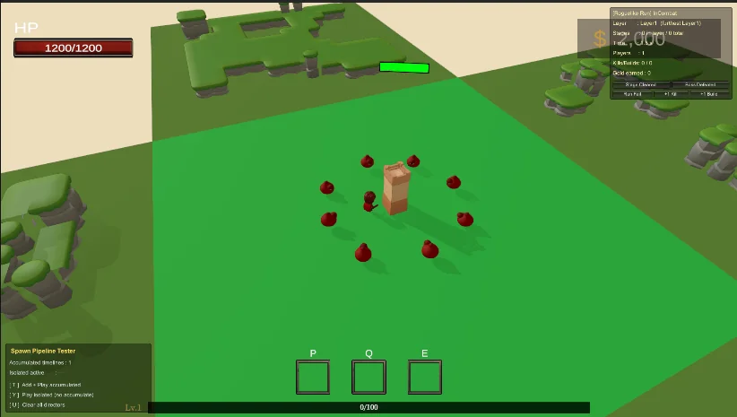
Preproduction前期制作
On 26 March 2026, sixteen design documents (v0.1, about 4,000 lines) fixed the design before full production: overview, world, characters, tower modules, tower health, building, walls, barracks, mech, enemies, waves, roguelike affixes, economy, UI and a master numbers table.
2026 年 3 月 26 日，16 份策划文档（v0.1，约 4000 行）在全面制作前把设计定下来：概述、世界观、角色、塔模块、塔血量、建造、城墙、兵营、机甲、敌人、波次、Roguelike 词条、经济、UI 和数值总表。
| System系统 | Design设计 |
|---|---|
| Characters角色 | 4 heroes, each with 1 passive and 2 skills. HP: Warrior 1200, Swordsman 800, Ink-smith 700, Apothecary 9004 名，各 1 被动 + 2 技能。HP：战士 1200 / 剑士 800 / 墨工 700 / 药师 900 |
| Tower modules塔模块 | Base ×4, Body ×3, Top ×6; three levels each. Upgrade costs 50% of base cost; Lv2 +30%, Lv3 +60% and unlocks a special effectBase 4 种、Body 3 种、Top 6 种，各 3 级。升级费为造价 50%；Lv2 +30%，Lv3 +60% 并解锁特效 |
| Tower durability塔耐久 | Each module has its own HP; if a lower module breaks, the ones above collapse, 0.2 s apart每个模块独立 HP；下层被毁，上层依次坍塌，间隔 0.2 秒 |
| Enemies敌人 | 8 puppet types and 3 bosses: Rotwood General 5000 HP / 2 phases, Bronze Spider 8000 / 3, Grand Puppeteer's Shadow 12000 / 38 种木偶 + 3 个 Boss：朽木将军 5000HP / 2 阶段、铜傀巨蛛 8000 / 3、大傀儡师·影 12000 / 3 |
| Affixes词条 | 36 affixes; drop rates white 60% / blue 25% / purple 12% / gold 3%; 30 s to choose36 个；掉率 白 60% / 蓝 25% / 紫 12% / 金 3%；30 秒选择 |
| Machine reactions机关反应 | Overheat (fire + frost), Superconduct (frost + lightning), Overload (fire + lightning), 2 s window过热（火 + 冰）、超导（冰 + 雷）、过载（火 + 雷），触发窗口 2 秒 |
| Economy经济 | Personal wallets, 200 to start, 50 per wave, +15 per medal across 4 medal types, 50% for assists, 50% refund on dismantle个人钱包，初始 200；每波 50；4 类金牌每枚 +15；助攻拿 50%；拆除退 50% |
| Scaling缩放 | Enemy HP +12% per room, damage +6%, gold +9.6% — gold grows slower than threat to avoid snowballing每房间敌人 HP +12%、伤害 +6%、金币 +9.6%，金币增长慢于威胁，避免滚雪球 |
| Walls / barracks / mech城墙 / 兵营 / 机甲 | Wall 300 HP for 40 gold; enemies break walls when the detour is over 2×. Barracks 500 HP, 4 unit types. Mech: 5 slots, 1–4 pilots, 120 s墙 300HP / 40 金，绕路超过 2 倍就破墙。兵营 500HP、4 兵种。机甲 5 插槽、1–4 人驾驶、持续 120 秒 |
Characters and art direction角色与美术方向
Four animal-folk heroes, each a different role: the Warrior (tank), the Swordsman (mobile melee with a floating companion blade), the Ink-smith (a raccoon builder whose passive buffs every machine within 8 m) and the Apothecary (support). Concept art and the turnaround sheets are by the team's concept artist; the demo uses low-poly placeholders in-engine while the bronze look is developed.
四名兽人英雄各司其职：战士（坦克）、剑士（高机动近战，身旁有一把自主飞剑）、墨工（浣熊族建造者，被动强化 8 米内所有机关）、药师（辅助）。概念图和三视图由团队原画绘制；Demo 阶段引擎内先用 Low Poly 占位，青铜风格美术逐步替换。
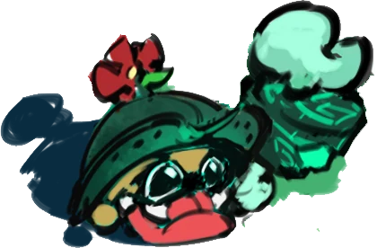
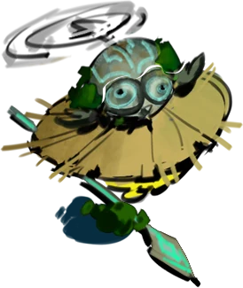
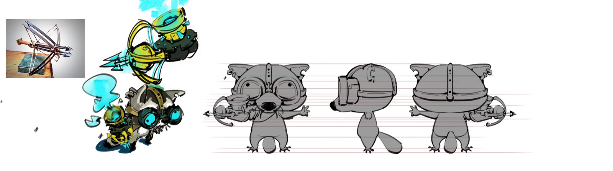
- Medals — "tanks earn by taking hits, healers by healing, builders by building", so every role gets paid for its job.金牌：「坦克靠挨打赚钱，奶妈靠治疗赚钱，建造者靠造塔赚钱」，每种职责都有收入。
- Free repair — to encourage players to maintain the defence actively.免费修理：鼓励玩家主动维护防线。
- Walls — cheap consumables, not permanent investments.城墙：定位为廉价消耗品。
- Network — the master client is authoritative for waves, enemy AI and damage; state syncs through RPCs and room properties.网络：主客户端对波次、敌人 AI、伤害做权威判定，状态用 RPC 和房间属性同步。
Production制作
Modular towers模块化防御塔
Towers assemble bottom-up — Base, Body, Top — and a twin base holds two bodies. Built so far: an archer top with target leading, crits and piercing; a mortar that calculates its own arc and has AoE falloff; and a flamethrower with cone damage ticks that walls can block.
防御塔自下而上拼装：Base → Body → Top，双联底座可以放两个 Body。已实现的攻击模块：弓箭（预判提前量、暴击、穿透）、迫击炮（自动计算弹道角、范围伤害衰减）、火焰喷射（锥形持续伤害，可被遮挡）。

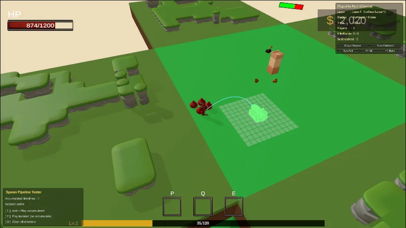
Characters, lobby and roguelike layer角色、大厅与 Roguelike 层
- Start flow for single player and Photon multiplayer: create or join a room, pick characters, load in.单人与 Photon 多人开局流程：建房或加入、选角色、进入关卡。
- Four characters with skills and the medal tracker; hammer building with repair.4 名角色技能与金牌统计；锤击建造与修理。
- Walls and gates that auto-connect across six mesh shapes.城墙与城门，6 种网格形态自动连接。
- Buff and experience systems with a selection screen; wave patterns as data; a map-module editor tool.Buff 与经验系统及选择界面；波次配置数据化；地图模块编辑器工具。
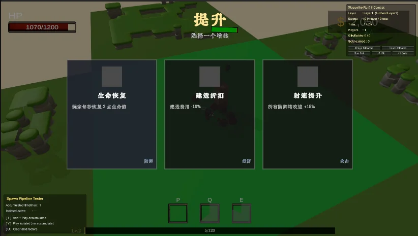
Redesign v0.2 · 7 May 2026v0.2 改版 · 2026.05.07
Since the redesign, throw building, timeline-stacked waves, the seeded branching path map and Wave Function Collapse terrain generation for map modules have all been implemented.
改版之后，抛投建造、时间轴堆叠波次、按 Seed 生成的分支路径地图，以及地图模块的波函数坍塌（WFC）地形生成都已实现。
Workflow工作流程
Development runs with AI coding agents, Claude Code and Codex, each task on its own pull-request branch that I review and merge. A project rules file sets how they work: check how existing games solve a feature before building it, and verify every visual change with an in-editor screenshot through Unity MCP, iterating until it meets the target.
开发中使用 Claude Code 和 Codex 等 AI 编程代理，每个任务在独立的 PR 分支上完成，由我审核后合并。项目规则文件规定了它们的工作方式：做功能前先参考现有游戏的做法；每次视觉修改都通过 Unity MCP 在编辑器内截图验证，不达标就继续迭代。
Art in production制作中的美术
Tower tops go from sketch to painted concept to 3D model: the catapult top and stone ball and the Ink-smith character are modelled from the concept sheets by the team's 3D artist. The Ink-smith's skill icons — passive, Resonance Matrix and Machine Beast — use the same bronze-and-verdigris palette.
塔顶从草图到原画再到 3D 模型：投石塔顶、石弹和墨工角色都由团队建模按概念图制作。墨工的技能图标（被动、震荡矩阵、机关兽）沿用青铜与铜绿配色。
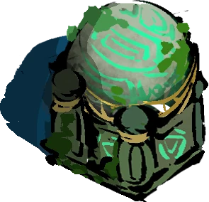
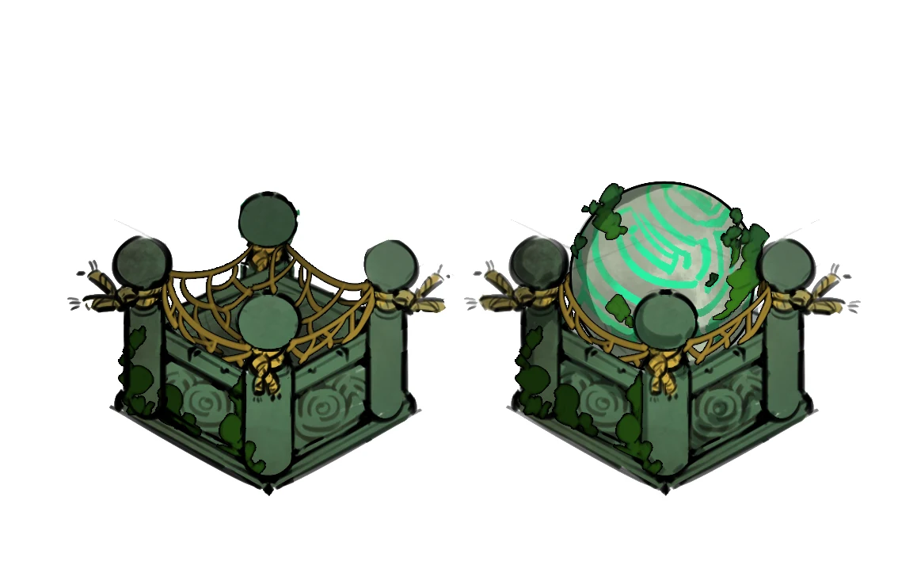
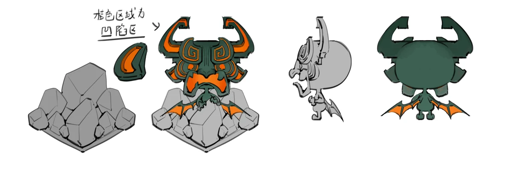
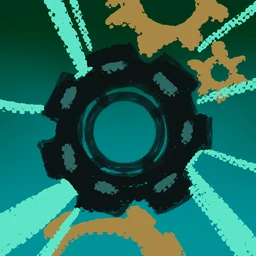
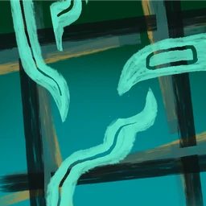
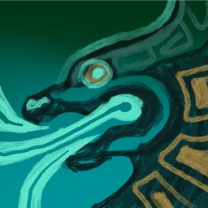
Testing & Polish测试与打磨
- Debug tools: raycast damage key, spawn pipeline tester, socket alignment logs.调试工具：射线伤害键、刷怪管线测试器、插槽对齐日志。
- Hit feedback on buildings: flash, shake and sound.建筑受击反馈：闪烁、震动、音效。
- Fixes: enemy jitter, projectiles briefly ignoring their own tower, a collider error on non-convex meshes.修复：敌人抖动、弹体短暂忽略自身塔的碰撞、非凸碰撞体报错。
Testing so far is internal: the team plays each build itself. The v0.2 redesign came out of that play — standing still through a build timer felt wrong in a game about running around the battlefield, and hand-authored wave recipes were too slow to iterate on.
目前的测试都是团队内部试玩。v0.2 改版就是这样来的：在一个到处跑位的游戏里站着等施工计时很别扭，手写的波次配方也太难迭代。
Release & Operations发布与运营
Build 0.1.0 of Turret Coop was made on 8 May 2026 for internal play; online co-op has been tested with two players over Photon. The build has not been shown publicly. The goal is a commercial release, with competitions along the way.
2026 年 5 月 8 日打出 Turret Coop 0.1.0 构建，用于内部试玩；通过 Photon 测试过两人联机。构建还没有公开展示过。目标是商业发行，过程中参加比赛。
What's Next后续计划
Demo goalsDemo 目标
- Four-player online sync四人联机同步
- 3 tower types, 3 enemy types3 种塔、3 种敌人
- 6 waves and 1 boss6 波 + 1 个 Boss
- 5 affixes and basic medals5 个词条、基础金牌
Designed, not built yet已设计、未实现
- Barracks and unit production; the combinable mech兵营与单位生产；可合体机甲
- Elemental machine reactions, random events, a machine codex元素机关反应、随机事件、机关图鉴
- Final bronze art in place of low-poly placeholders; progression across runs用正式青铜美术替换 Low Poly 占位；跨局成长
Open design questions待定设计问题
- Which key triggers repair after throw building replaced the hammer抛投建造取代锤子后，修理由哪个键触发
- How dismantling and moving towers work with throwing拆除和搬运怎么适配抛投
- Protection while a player has a menu open玩家打开菜单时的保护
- Whether thrown parts collide with teammates抛出的部件会不会砸到队友
Team团队
- Lizhuoyuan Wan — project management, game design, programming万李卓圜：项目管理、策划、程序
- Environment artist — level whitebox, terrain, environment assets, toon shaders环境美术：关卡白盒、地形、环境资源、卡通着色器
- Concept artist — character concepts and turnaround sheets, tower concepts, skill icons原画：角色概念图与三视图、塔的原画、技能图标
- 3D artist — character and tower module models建模：角色与塔模块模型